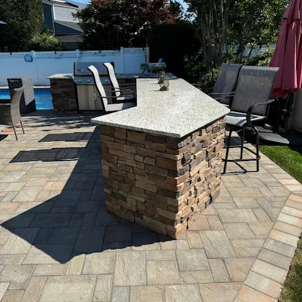
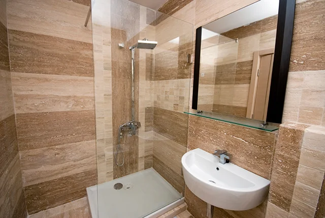

Discover the best masonry materials for residential construction in Syosset, NY. Learn how brick, stone, and concrete improve durability and design with expert insights from ORA Construction.

Nestled in the heart of Long Island’s North Shore, Syosset, New York offers a unique blend of suburban tranquility and easy access to the vibrant pace of New York City. Located within Nassau County, New York, the community has become one of the most desirable residential areas on Long Island. With a population of roughly 19,000 residents, Syosset is known for its well-maintained neighborhoods, strong schools, and a welcoming environment that appeals to families and professionals alike. The area balances peaceful suburban living with modern conveniences, making it an ideal place for homeowners investing in residential construction and remodeling.
One of Syosset’s defining features is its natural beauty and proximity to Long Island’s scenic coastline. Residents enjoy nearby attractions such as Planting Fields Arboretum State Historic Park, a stunning 409-acre estate filled with gardens, greenhouses, and historic architecture. The region experiences all four seasons, with warm summers perfect for outdoor living spaces and crisp autumns that transform the landscape with colorful foliage. Winters can bring occasional snowfall, while spring arrives with blooming trees and comfortable temperatures—conditions that often influence building materials used in residential construction projects.
Community life in Syosset also revolves around seasonal events and local traditions. Throughout the year, residents participate in festivals, farmers markets, and holiday gatherings that reflect the area’s strong sense of community. Nearby cultural events across Nassau County draw visitors from across Long Island, creating a lively atmosphere that blends suburban comfort with regional culture. These events, along with easy access to transportation and recreation, make Syosset a dynamic place to live and invest in property improvements.
Because homes here often combine classic architecture with modern upgrades, construction projects are common—from driveway paving Nassau County neighborhoods to complete renovations and new builds. Homeowners frequently rely on a trusted ORA Construction to guide them through projects ranging from structural upgrades to custom masonry work. With the right materials and expert craftsmanship, masonry can elevate both the appearance and durability of homes throughout Syosset and the surrounding Long Island communities.
When homeowners begin a building or renovation project, they often focus on design and layout first. Yet the materials used in the structure are just as important as the aesthetics. Masonry materials form the backbone of many homes, providing durability, insulation, and visual appeal that can last for generations.
For a construction company masonry specialists rely on, the selection of the right materials determines how well a structure performs over time. Long Island’s climate—humid summers, freezing winters, and occasional coastal storms—requires building materials that can handle temperature fluctuations and moisture exposure. Masonry products such as brick, stone, and concrete offer the strength and resilience needed to stand up to these conditions.
A reputable Nassau County construction company will carefully evaluate factors such as soil conditions, load-bearing requirements, and design preferences before recommending masonry options. These considerations ensure that everything from foundation walls to outdoor living spaces maintains its structural integrity while complementing the style of the home.
8 Woodhollow Ln, Huntington, NY 11743, USA
Construction Company
Service, USA
Brick has remained one of the most popular building materials in residential construction for centuries, and it continues to be widely used in homes across Long Island. Its classic appearance fits beautifully within Syosset’s established neighborhoods, where traditional architecture often blends colonial and contemporary styles.
A skilled masonry contractor Syosset NY homeowners trust understands the versatility of brick. It can be used for exterior facades, chimneys, walkways, and retaining walls. Brick also provides natural fire resistance and excellent durability, which makes it particularly valuable in residential construction projects.
Another advantage of brick masonry is its low maintenance requirements. Once installed correctly, brick structures can last decades with minimal upkeep. This durability makes brick a reliable choice for homeowners working with a general contractor Nassau County residents depend on for long-term construction solutions.
Ora Construction - Home Remodeling, Masonry & Landscape Design
199 Lafayette Drive Syosset,
NY 11791
Phone Number:
(516) 697-7680
Website:
https://ora-construction.com/
Natural stone offers unmatched beauty and strength, making it one of the most visually striking masonry materials available. From limestone and granite to fieldstone and bluestone, natural stone adds texture and character to homes while maintaining exceptional durability.
Stone is frequently used for exterior walls, fireplaces, and architectural accents. In many cases, homeowners seeking a custom aesthetic in new home construction Long Island properties choose stone because it creates a sense of permanence and luxury. The material naturally resists weathering and can withstand the harsh seasonal changes common throughout Nassau County.
Stone masonry also works well in outdoor living spaces. When integrated into patios, steps, and decorative walls, it enhances the overall design of the property while maintaining structural reliability. Skilled builders who specialize in residential construction know how to balance stone’s weight and structural needs with the home’s overall design.
Concrete has become an essential component in modern residential construction due to its strength, versatility, and cost-effectiveness. Concrete blocks, poured foundations, and reinforced concrete structures provide exceptional load-bearing capacity and long-term durability.
Concrete is especially valuable for projects involving concrete home remodeling Long Island homeowners undertake when upgrading foundations, basements, or structural walls. Because concrete can be molded into various shapes and reinforced with steel, it allows builders to create strong and stable structures that can support large residential designs.
Driveways are another area where concrete excels. When combined with professional driveway paving Nassau County services, concrete provides a smooth, durable surface capable of withstanding heavy vehicle use and changing weather conditions. For homeowners planning upgrades or structural improvements, concrete remains one of the most dependable masonry materials available.
Outdoor living areas have become a major focus in modern residential construction. Homeowners increasingly want patios, decks, and gathering spaces that extend their living area beyond the interior of the home. Masonry materials play a crucial role in making these spaces both beautiful and durable.
A patio and deck builder Syosset residents rely on will often incorporate brick, stone, or concrete pavers into outdoor designs. These materials can withstand weather exposure while maintaining visual appeal. They also create stable surfaces for seating areas, fire pits, and walkways that connect different parts of the property.
These features are often part of larger construction projects managed by a home addition contractor Long Island homeowners hire to expand their living space. When properly designed and installed, masonry elements help outdoor spaces blend seamlessly with the architecture of the home while adding long-term value to the property.

Selecting the best masonry material requires careful consideration of both structural needs and design goals. During projects such as a basement remodel Long Island homes often require reinforced walls, moisture protection, and durable flooring materials. Concrete and masonry blocks frequently provide the stability needed for these environments.
For exterior projects, homeowners may choose brick or stone to match existing architecture while enhancing curb appeal. An experienced home builder or construction professional will evaluate each project individually, ensuring that materials align with both structural requirements and aesthetic preferences.
Working with a trusted general contractor Nassau County homeowners respect ensures that every phase of construction—from design planning to material selection—is handled with expertise. Professionals understand how to combine masonry materials effectively, creating structures that are not only strong but also visually appealing.
Masonry is a building technique that uses materials such as brick, stone, and concrete bonded together with mortar to create durable walls, foundations, and structural elements.
Masonry distributes structural weight evenly and provides excellent load-bearing support. This helps buildings resist cracking, shifting, and long-term structural damage.
When installed correctly by experienced professionals, masonry structures can last several decades or even centuries with minimal maintenance.
Yes. Masonry is often used in projects like home remodeling Long Island, structural reinforcement, foundation repair, and basement renovations.
Yes. Durable features such as strong foundations, concrete driveways, and professionally installed masonry walls can increase property value and improve long-term durability.